Blazor control UI: simplified for new users
2026-11-21 · Release build on port 5081 against the behaviour service on 8767, no physical robot. Captured with headless Chrome through the DevTools protocol. Ten simplifications; the safety gates are unchanged (preview, read-only check, pre-flight, confirmation). The Unreal panel was not changed by this pass.
| # | Change | Where |
|---|---|---|
| 1 | "What do you want to do?" chooser; each task shows only what it needs | Control |
| 2 | Four-step real-robot progress bar with the missing step and a button for it | Control → Run on the real robot |
| 3 | One name per target: Twin (engine: Built-in / Unreal) and Real robot; blue = twin, orange = real | everywhere |
| 4 | Advanced switch hides modes, limits, calibration, network, versions, the 26-joint list, history heatmap and raw log | header |
| 5 | Nav cut to Control · Motions · Walk · Health · Setup (+ Help); Robustness and Diagnostics linked from Health, OpenAPI in Help | header |
| 6 | Health opens with a one-sentence verdict; the probe table is behind Show details; optional checks read "not in use" in grey | Health |
| 7 | Ask box with example chips on every page (Control keeps the full assistant with voice); "Is the robot ready?" gets a direct answer | all pages |
| 8 | A one-line reason under disabled controls (arm lock, busy, store offsets, mode off, walk lock, run step) | Control, Motions, Setup, Walk |
| 9 | Motions: library cards with ▶ Play on twin first, then quick poses; recording moved into the editor; modes and limits under Advanced | Motions |
| 10 | First-run 4-step tour (reopen from Help) and a header badge: TWIN ONLY / REAL ROBOT CONNECTED / SERVICE OFFLINE | header |
Before

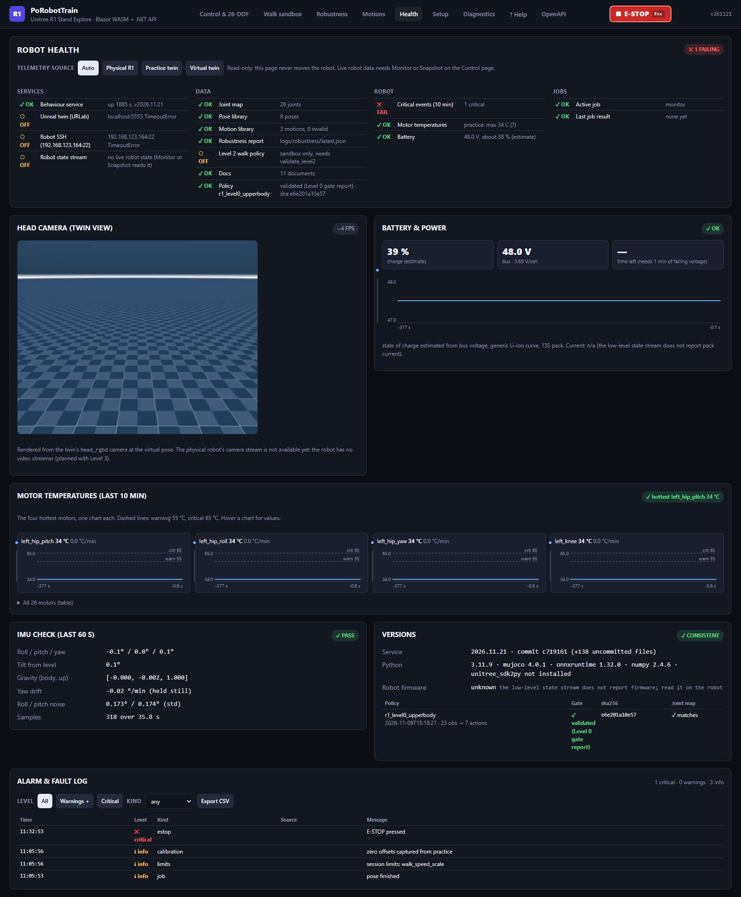

After
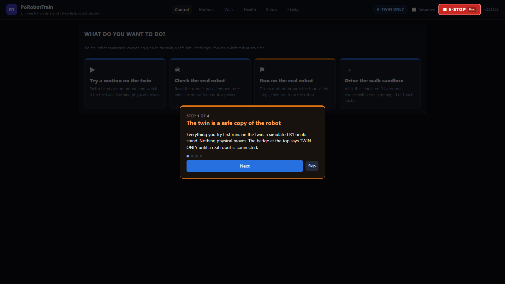
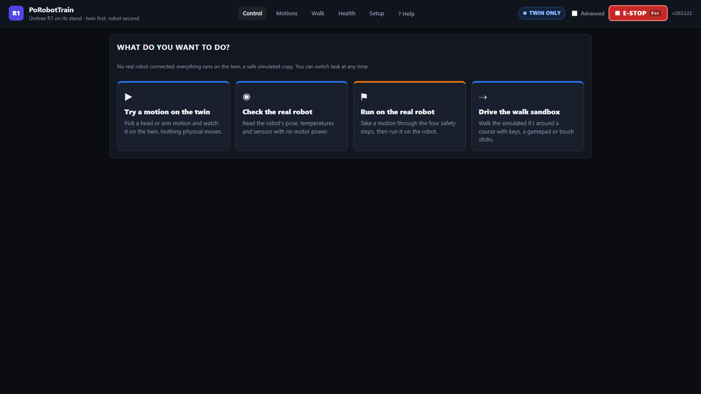
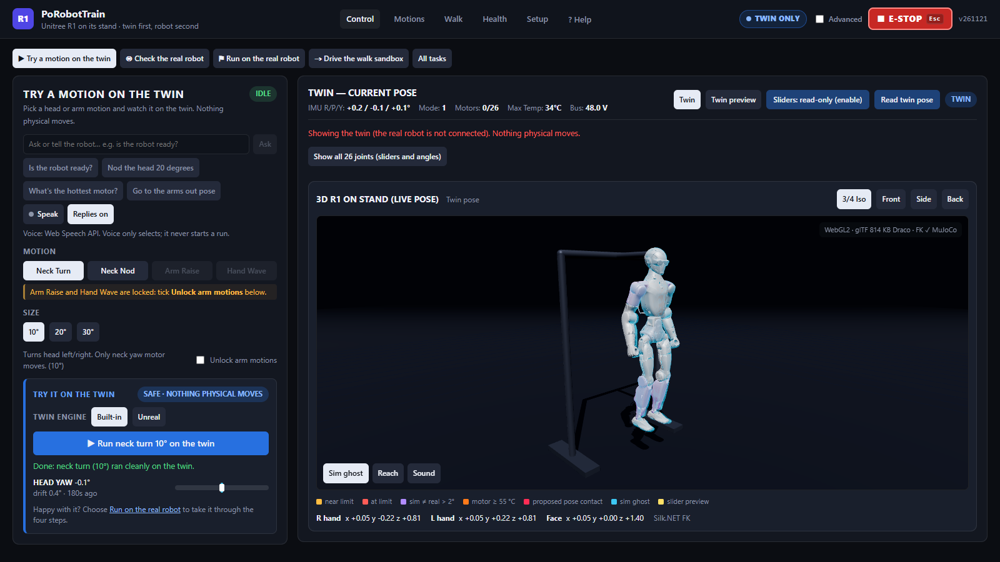
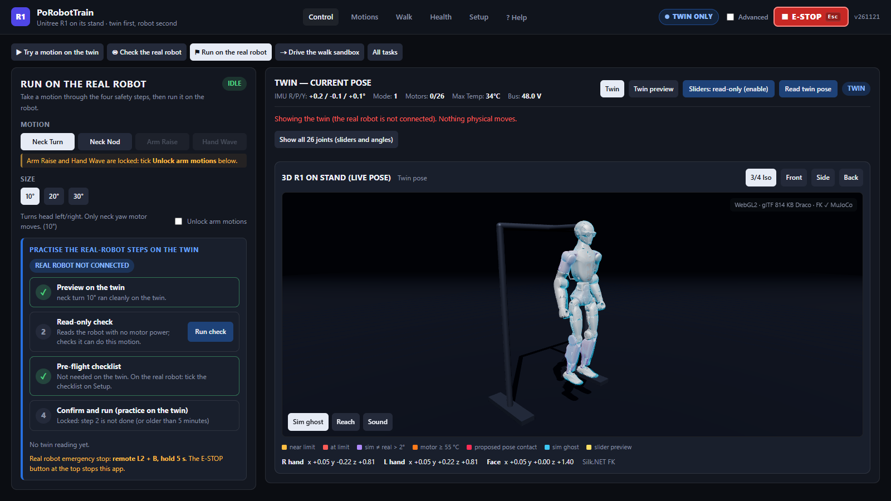
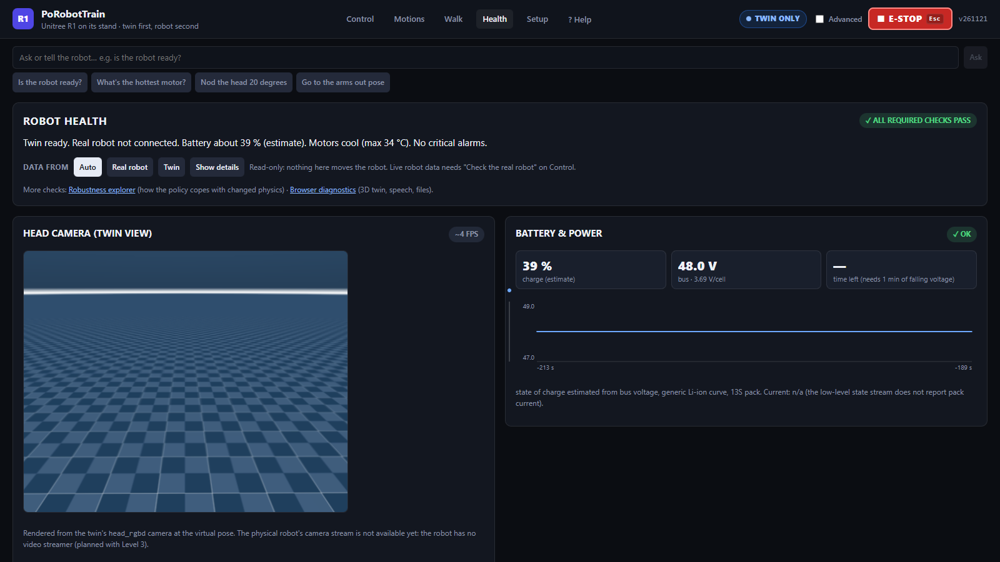
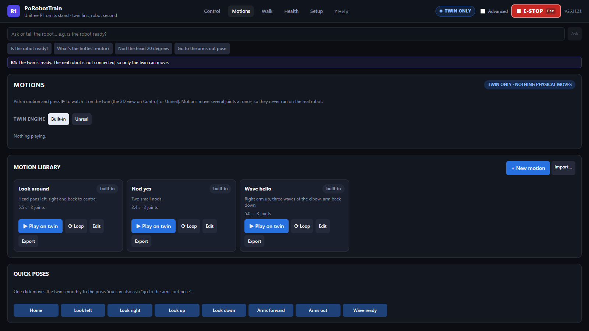
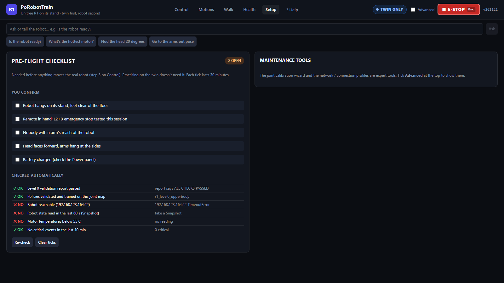
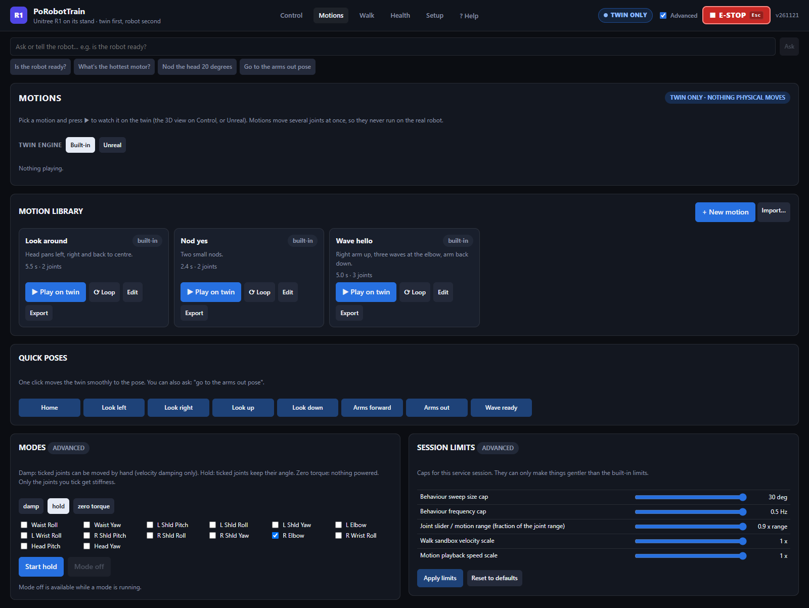
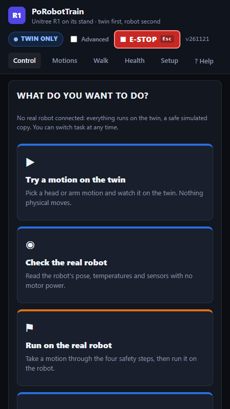
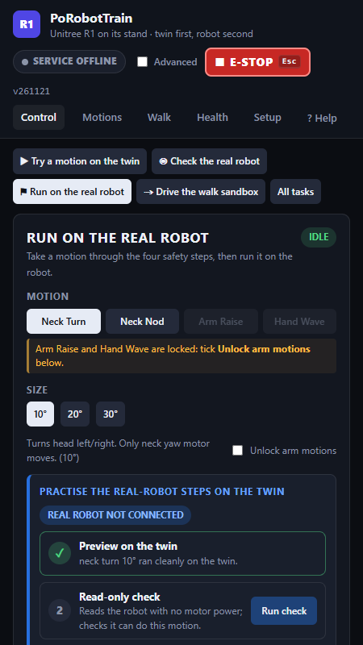
Checks
pytest (incl. new tests for the pre-flight summary and the "ready" answer) | passed |
dotnet test Integration / Unit | 27 / 12 passed |
ruff check / ruff format --check | not run (ruff not installed) |
Not verified
- No physical robot: the REAL ROBOT CONNECTED badge and the real-robot wording of the steps were not seen live.
- Pointer drags, voice input and keyboard shortcuts were not driven; clicks were scripted.
- The Unreal panel keeps its previous layout (this pass changed the Blazor UI only).